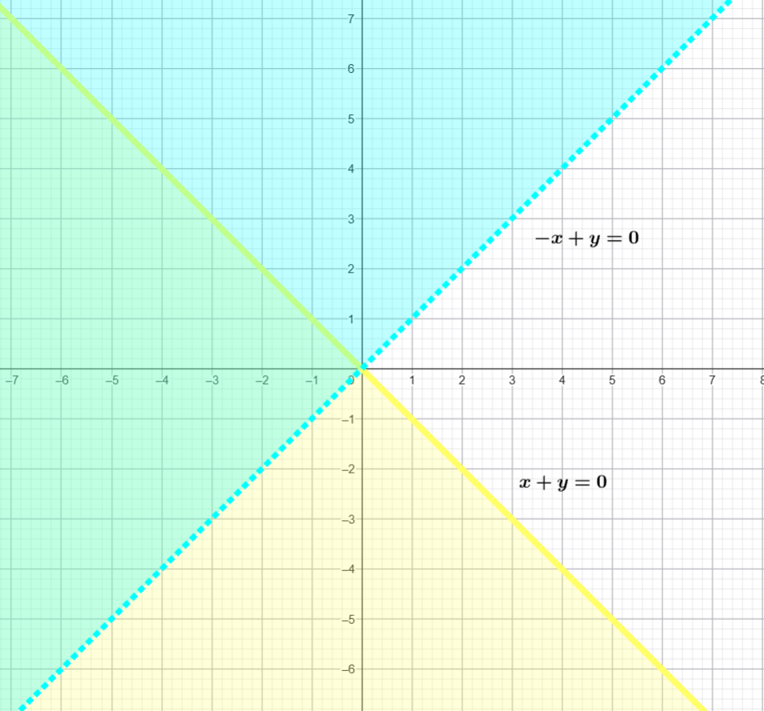
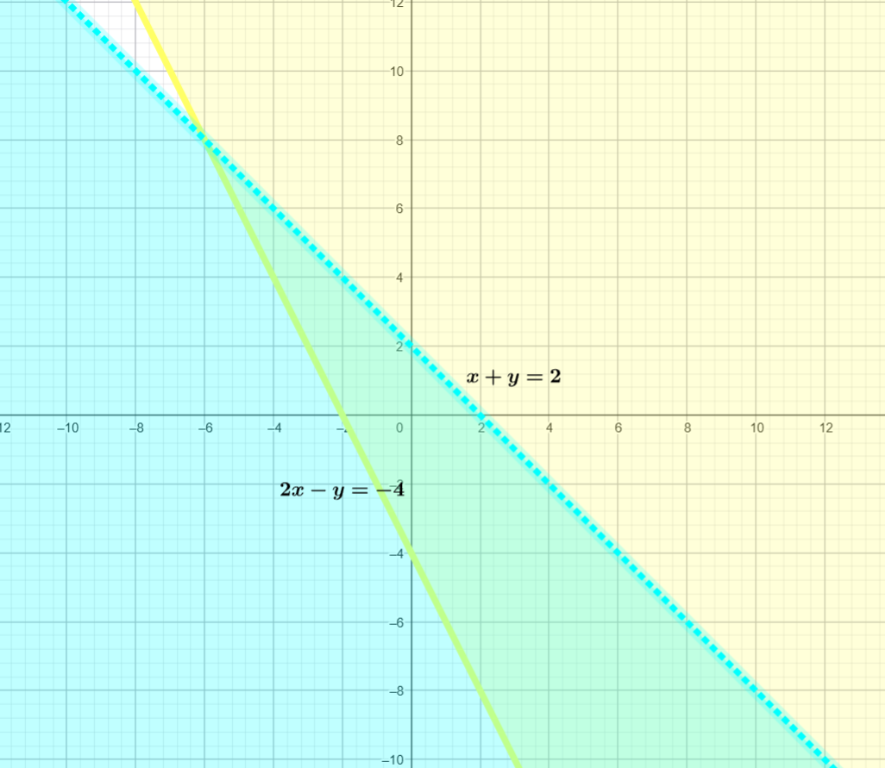
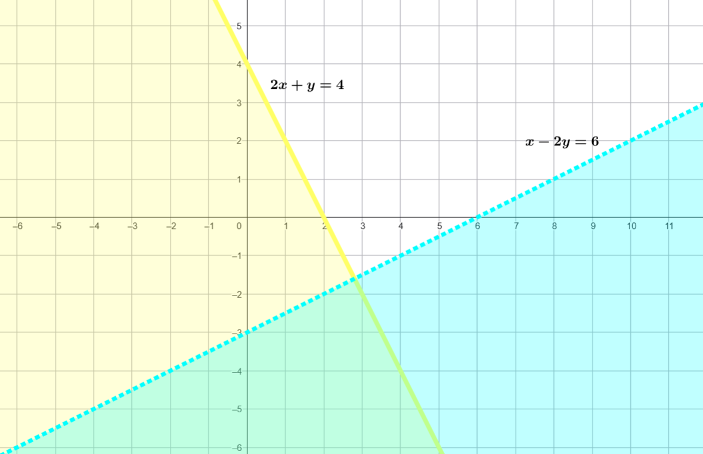
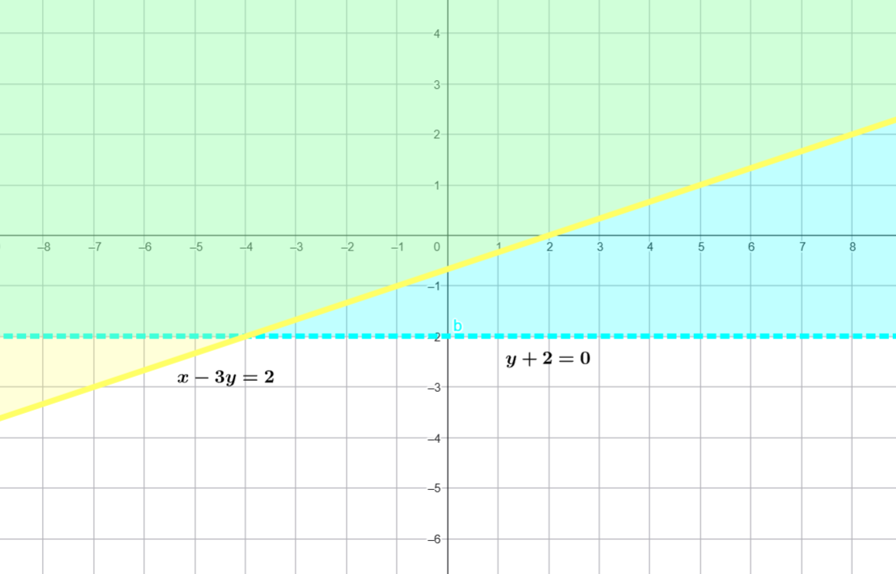
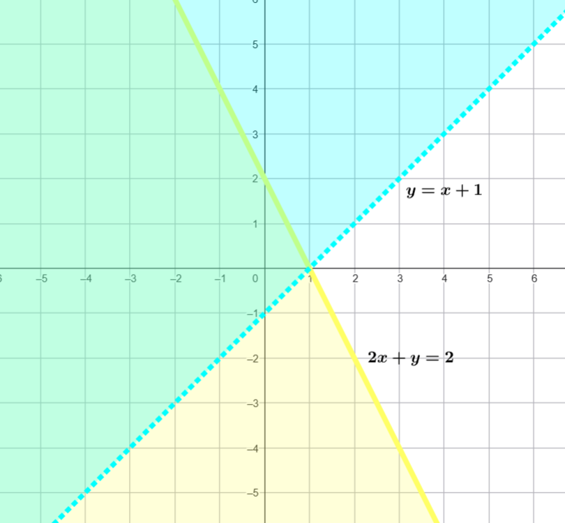
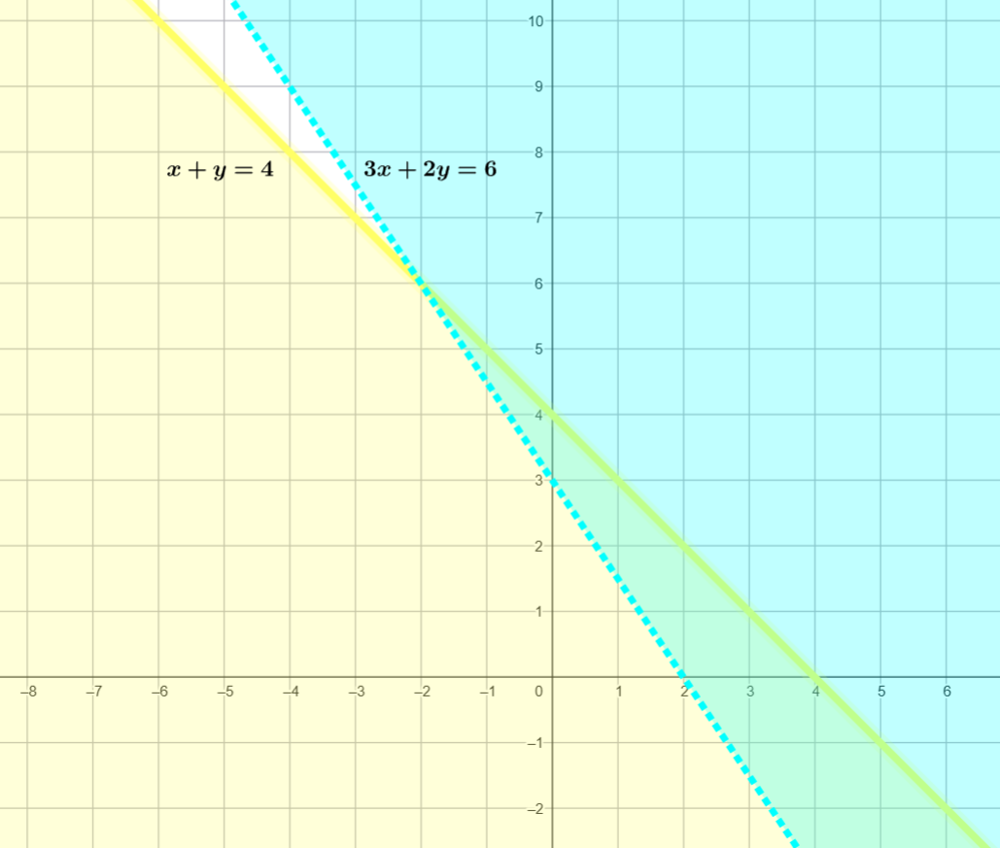

problemas inecuaciones
Sistemas
\( \begin{cases} x &+ y &\leq 0 \\ -x &+ y &> 0 \end{cases} \)
- Rectas frontera:
- \(x + y = 0\) → línea continua (amarilla)
- \(-x + y = 0\) → línea discontinua (azul)
- \(x + y = 0\) → línea continua (amarilla)
- Región factible:
- Por debajo de \(x + y = 0\) (color amarillo)
- Por encima de \(-x + y = 0\) (color azul)
- Por debajo de \(x + y = 0\) (color amarillo)
✅ Intersección: Región entre ambas rectas (color verde), excluyendo la segunda.

\( \begin{cases} 2x - y &\geq -4 \\ x + y &< 2 \end{cases} \)
- Rectas frontera:
- \(2x - y = -4\) → continua (amarilla)
- \(x + y = 2\) → discontinua (azul)
- \(2x - y = -4\) → continua (amarilla)
- Región factible:
- Por encima de \(2x - y = -4\) (color amarillo)
- Por debajo de \(x + y = 2\) (color azul)
- Por encima de \(2x - y = -4\) (color amarillo)
✅ Intersección: Zona entre ambas rectas (color verde).

\( \begin{cases} 2x &+ y &\leq 4 \\ x &- 2y &> 6 \end{cases} \)
- Rectas frontera:
- \(2x + y = 4\) → continua (amarilla)
- \(x - 2y = 6\) → discontinua (azul)
- \(2x + y = 4\) → continua (amarilla)
- Región factible:
- Por debajo de \(2x + y = 4\) (color amarillo)
- Por encima de \(x - 2y = 6\) (color azul)
- Por debajo de \(2x + y = 4\) (color amarillo)
✅ Intersección: Región entre ambas, excluyendo la segunda recta (color verde).

\( \begin{cases} x &- 3y &\leq 2 \\ y &+ 2 &> 0 \end{cases} \)
- Rectas frontera:
- \(x - 3y = 2\) → continua (amarilla)
- \(y + 2 = 0\) → discontinua (azul)
- \(x - 3y = 2\) → continua (amarilla)
- Región factible:
- Por encima de \(x - 3y = 2\) (color amarillo)
- Por encima de \(y = -2\) (color azul)
- Por encima de \(x - 3y = 2\) (color amarillo)
✅ Intersección: Zona donde coinciden (color verde).

\( \begin{cases} y &> x - 1 \\ 2x &\leq 2 - y \end{cases} \)
- Rectas frontera:
- (y = x - 1) → discontinua (azul)
- (2x + y = 2) → continua (amarilla)
- (y = x - 1) → discontinua (azul)
- Región factible:
- Por encima de (y = x - 1) (color azul)
- Por debajo de (2x + y = 2) (color amarillo)
- Por encima de (y = x - 1) (color azul)
✅ Intersección: Región entre ambas (color verde).

\(\begin{cases} x &+ y &\leq 4 \\ 3x &- 2y &> 6 \end{cases} \)
- Rectas frontera:
- (x + y = 4) → continua (amarilla)
- (3x - 2y = 6) → discontinua (azul)
- (x + y = 4) → continua (amarilla)
- Región factible:
- Por debajo de (x + y = 4) (color amarillo)
- Por encima de (3x - 2y = 6) (color azul)
- Por debajo de (x + y = 4) (color amarillo)
✅ Intersección: Zona entre ambas (color verde).

Obra publicada con Licencia Creative Commons Reconocimiento Compartir igual 4.0